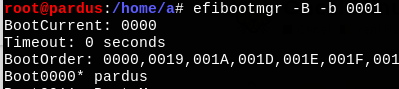

UEFI Nedir?¶
UEFI (Unified Extensible Firmware Interface), modern bilgisayar sistemlerinde BIOS'un yerini alan bir arayüzdür. UEFI, bilgisayarın donanımını başlatmak ve işletim sistemini yüklemek için kullanılır. Linux işletim sistemi, UEFI'yi destekler ve UEFI'ye erişmek için birkaç yöntem vardır.
BIOS Ayarlarından UEFI'ye Geçiş Yapma:¶
Bilgisayarınızın BIOS ayarlarına erişin ve UEFI'yi etkinleştirin. Bu ayar genellikle "Boot" veya "Startup" bölümünde bulunur. UEFI'yi etkinleştirdikten sonra, bilgisayarınızı yeniden başlatın ve UEFI arayüzüne erişebilirsiniz.
UEFI Shell Kullanma:¶
Bazı durumlarda, UEFI arayüzüne erişmek için UEFI Shell'i kullanmanız gerekebilir. UEFI Shell, bir komut satırı arabirimine benzer bir ortamdır. UEFI Shell'i kullanarak UEFI ayarlarını yapılandırabilir ve yönetebilirsiniz.
UEFI, bilgisayarınızın donanımını yönetmek ve işletim sistemini yüklemek için önemli bir arayüzdür. Linux işletim sistemi, UEFI'yi destekler ve UEFI arayüzüne erişmek için yukarıda belirtilen yöntemleri kullanabilirsiniz.
Linuxda Uefi Alana Erişim¶
Linux işletim sisteminde efivars, EFI (Extensible Firmware Interface) değişkenlerine erişim sağlamak için kullanılır. EFI, modern bilgisayarların başlatma sürecini yöneten bir arayüzdür ve efivars, bu arayüzdeki değişkenlere erişmek için kullanılan bir arabirimdir.
Efivars'a erişmek için aşağıdaki adımları izleyebilirsiniz:
Uefi alanerişim olabilmesi için bios üzerinden uefi açık olmalıdır.
Linux sistem açılır. Uefi bistan açık olunca kernel /sys/firmware/efi/efivars dizini ekleyecektir.
Eğer sistem açıldığında /sys/firmware/efi/efivars yoksa uefi açık değildir.
bash scriptlerde sistemin uefi veya legacy olup olmadığı aşağıdaki kodla tespit edilebilir.
if [[ -d /sys/firmware/efi ]] ; then echo "sistem uefi(yeni)" else echo "sistem legacy(eski)" fi
Terminali açın ve sudo su komutunu kullanarak root kullanıcısı olun.
cd /sys/firmware/efi/efivars komutunu kullanarak efivars dizinine gidin.
ls komutunu kullanarak efivars dizinindeki değişkenleri listeleyin.
İlgilenen bir değişkenin içeriğini görüntülemek için cat {değişken_adı} komutunu kullanın. Örneğin, cat SecureBoot-8be4df61-93ca-11d2-aa0d-00e098032b8c komutunu kullanarak Secure Boot durumunu kontrol edebilirsiniz.
Efivars'a erişmek, EFI ayarlarını kontrol etmek veya değiştirmek için kullanışlı bir yöntemdir. Ancak, dikkatli olmanız ve gereksiz değişikliklerden kaçınmanız önemlidir. Yanlış bir değişiklik, sisteminizin başlatılmasını engelleyebilir veya istenmeyen sonuçlara yol açabilir. Bu nedenle, efivars'a erişirken dikkatli olmanızı öneririm.
Linuxta Uefi Alanı Silme¶
efibootmgr komutu çalıştırarak entryleri listeleyin,
{kind=link}
efibootmgr -B -b xxxx yaparak entry silin xxxx için bir önceki çıktıdaki değerlere bakarak yazmalısınız.
{kind=link}
Eğer yanlışlıkla pardus entrysini silerseniz isosunu canlı olarak başlatıp başlangıç onarmadan grubu tekrar yükleyi seçebilirsiniz. Windows için olanı silerseniz windowsu tekrar kurmanız gerekebilir.
Bu komutlardan sonra sisteme yeniden sistem kurmak zorunda kalabilirsiniz. Bundan dolayı bu komutları uefi alanda sorun olduğunda ve sistem açılmadığında, canlı sistemler üzerinden yapmanızı tavsiye ederim.
Alternatif olarak aşağıdaki komutlarıda kullanarak UEFI bilgilerini silebilirsiniz.
sudo chattr -i /sys/firmware/efi/efivars/*
sudo rm -f /sys/firmware/efi/efivars/*
Uefi Alan Neden Silinir¶
Sistem açılmıyorsa
no boot options hatası alınıyorsa
uefi bir sitem kurulumu hiç bir şekilde olmuyorsa uefi alanı silmek gerekebilir.